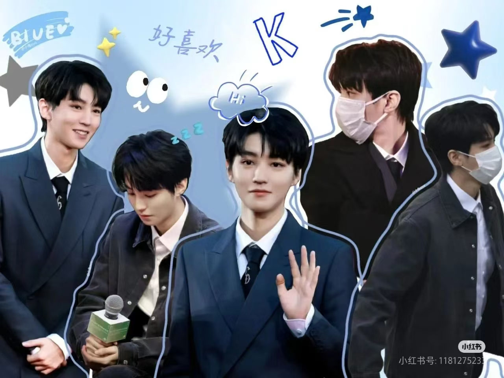

来源--网络平台

王俊凯的综艺表现 在《高能少年团》《我们的乐队》《中餐厅》等综艺节目中，王俊凯展现了超高的情商和幽默感。 他既能活泼搞笑，带动节目气氛，又能细心体贴，照顾他人感受。在《中餐厅》里，他不仅厨艺出色， 还展现了出色的沟通能力和团队协作精神，让观众看到他成熟稳重的一面。他的综艺感自然不做作， 总能带给观众欢乐，也让人更加喜爱这个阳光少年。
无论是拍戏、演唱会，还是录制节目，王俊凯始终以最专业的态度对待工作。 他曾带伤坚持完成舞台表演，为了角色减肥增肌，甚至在拍摄期间熬夜钻研剧本。 他的努力和坚持让合作过的导演、前辈都对他赞不绝口。他从不敷衍任何一次演出， 始终追求极致，这种敬业精神值得所有人学习。
从13岁出道至今，王俊凯经历了从青涩少年到成熟艺人的完美蜕变。他不断突破自我， 在音乐、影视、综艺等领域全面发展，用实力证明了自己的无限可能。他面对质疑和压力时从不退缩， 反而更加努力，用优秀的作品回馈粉丝。他的成长历程激励着无数年轻人勇敢追梦。
吴嵩嵩制作
欣黎个人工作室
小螃蟹专属打卡基地
联系我们
3077132551@qq.com
欢迎来到王俊凯的专属网站